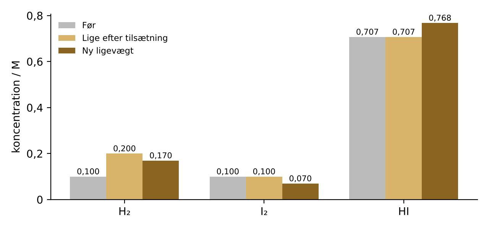
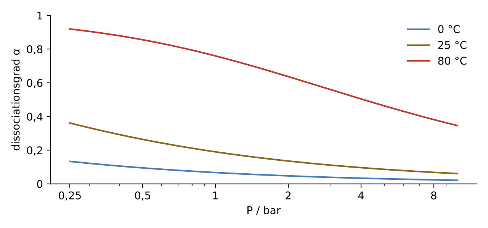
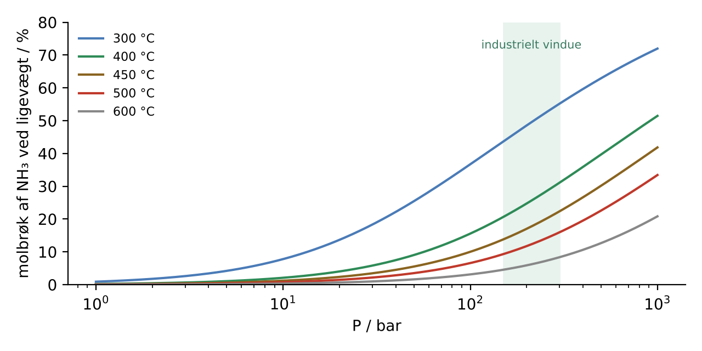
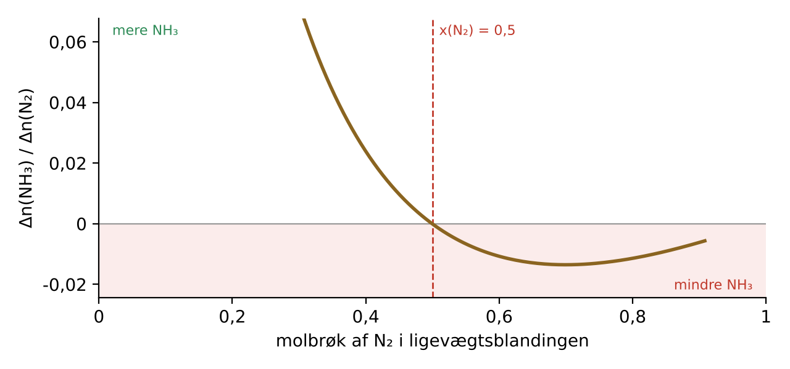

Princippet
Den franske kemiker Henri Louis Le Chatelier (1850–1936) formulerede princippet i 1884, og den tyske fysiker Ferdinand Braun gav det en mere generel form i 1887. Derfor kaldes det også Le Chatelier–Brauns princip. I gymnasiets formulering lyder det:
De tre klassiske påvirkninger er en ændring af en koncentration, af trykket (ved at ændre rumfanget) og af temperaturen. En katalysator ændrer ikke ligevægten – den får den blot til at indstille sig hurtigere, fordi den sænker aktiveringsenergien lige meget i begge retninger.
Det vigtige ord er delvist. Ligevægten kan aldrig fuldstændig ophæve påvirkningen. Hvis man tilsætter et stof, ender der altid mere af det end før – bare ikke så meget mere, som man tilsatte.
Hvorfor det virker: Q og K
Princippet er ikke en selvstændig naturlov, men en konsekvens af termodynamikken. For en reaktion $a\,\mathrm{A} + b\,\mathrm{B} \rightleftharpoons c\,\mathrm{C} + d\,\mathrm{D}$ definerer man reaktionsbrøken
Ved ligevægt er $Q$ lig med ligevægtskonstanten $K$. Sammenhængen med Gibbs-energien er
Er $Q < K$, er $\Delta_r G < 0$, og reaktionen løber mod højre. Er $Q > K$, løber den mod venstre. Det er hele mekanismen: en påvirkning ændrer enten $Q$ (koncentration og tryk) eller $K$ (temperatur), og systemet bevæger sig, indtil de to igen er ens.
Hvad ændrer Q?
Tilsætning eller fjernelse af et stof og ændring af rumfang/tryk. $K$ er uændret, så ligevægten flytter sig, indtil $Q = K$ igen.
Hvad ændrer K?
Kun temperaturen. Van 't Hoffs ligning $\dfrac{d\ln K}{dT} = \dfrac{\Delta_r H^\circ}{RT^2}$ viser, at $K$ vokser med $T$ for endoterme reaktioner og falder for exoterme.
Det bedste råd til elever er derfor: Når du er i tvivl, så regn Q ud og sammenlign med K. Det giver altid det rigtige svar – også i de tilfælde, hvor princippet formuleret i ord er tvetydigt.
Eksempel 1 · Koncentration: H₂ + I₂ ⇌ 2HI
Ved ca. 450 °C er $K = 50$ for dannelsen af hydrogeniodid. Vi starter i ligevægt med $[\mathrm{H_2}] = [\mathrm{I_2}] = 0{,}100$ M. Så er
Nu tilsættes 0,100 M H₂, så $[\mathrm{H_2}] = 0{,}200$ M. Lige efter tilsætningen er
Ligevægten forskydes mod højre. Kaldes den omsatte mængde H₂ for $x$, skal
Den fysisk mulige rod er $x = 0{,}0304$ M. Den nye ligevægt er
| [H₂] / M | [I₂] / M | [HI] / M | Q | |
|---|---|---|---|---|
| Før | 0,100 | 0,100 | 0,707 | 50 |
| Lige efter tilsætning | 0,200 | 0,100 | 0,707 | 25 |
| Ny ligevægt | 0,170 | 0,070 | 0,768 | 50 |
Kun ca. 30 % af det tilsatte H₂ forbruges. Ligevægten modvirker påvirkningen, men kun delvist: der er stadig 70 % mere H₂ end før.

Eksempel 2 · Tryk: N₂O₄ ⇌ 2NO₂
Dinitrogentetraoxid er farveløst, nitrogendioxid er rødbrunt. Ved 25 °C er $K_p = 0{,}15$ (med standardtrykket $p^\circ = 1$ bar). Starter man med ren N₂O₄, og en brøkdel $\alpha$ dissocierer, er molbrøkerne $x_{\mathrm{NO_2}} = \frac{2\alpha}{1+\alpha}$ og $x_{\mathrm{N_2O_4}} = \frac{1-\alpha}{1+\alpha}$. Det giver
| P / bar | α | x(NO₂) |
|---|---|---|
| 1 | 0,190 | 0,32 |
| 10 | 0,061 | 0,12 |
Tidobles trykket, falder dissociationsgraden fra 19 % til 6 %. Ligevægten forskydes mod den side, der har færrest gasmolekyler. Men læg mærke til, hvad man faktisk ser, når man trykker stemplet i en sprøjte ind: gassen bliver først mørkere, fordi de samme NO₂-molekyler nu er presset sammen i et mindre rum. Derefter bliver den langsomt lidt lysere igen, når ligevægten forskydes mod N₂O₄. Den bliver dog aldrig så lys som før – koncentrationen af NO₂ ender stadig højere. Igen: delvis modvirkning.

Eksempel 3 · Temperatur og van 't Hoff
Dissociationen af N₂O₄ er endoterm med $\Delta_r H^\circ \approx +57$ kJ/mol. Antages $\Delta_r H^\circ$ konstant, giver integration af van 't Hoffs ligning
Fra 298 K til 350 K:
Ved 1 bar giver det $\alpha^2 = 4{,}6/(4{,}6+4)$, altså $\alpha \approx 0{,}73$. Dissociationen stiger fra 19 % til 73 %, og den brune farve bliver tydeligt dybere. Det er den klassiske demonstration med to forseglede rør med NO₂, det ene i varmt vand og det andet i isvand. Brug knapperne „Varmt vandbad" og „Isvand" i simulationen ovenfor.
Temperatur er den eneste af de tre påvirkninger, der ændrer selve $K$. Når man varmer op, „modvirker" systemet påvirkningen ved at lade den reaktion løbe, der optager varme.
Anvendelse: Haber-Bosch-kompromiset
Ammoniaksyntesen $\mathrm{N_2} + 3\mathrm{H_2} \rightleftharpoons 2\mathrm{NH_3}$ er exoterm ($\Delta_r H^\circ \approx -92$ kJ/mol) og mindsker antallet af gasmolekyler fra fire til to. Le Chateliers princip siger derfor: lav temperatur og højt tryk giver det største udbytte. Men ved lav temperatur går reaktionen alt for langsomt, selv med jernkatalysator. Industrien vælger et kompromis omkring 400–500 °C og 150–300 bar og fjerner løbende ammoniak ved at køle den ud som væske, så ligevægten hele tiden trækkes mod højre.
Kurverne er beregnet for en blanding af N₂ og H₂ i forholdet 1 : 3, ideal gas, $K_p(723\ \mathrm{K}) \approx 1{,}45\cdot10^{-5}$ bar⁻² og konstant $\Delta_r H^\circ$. Ved meget høje tryk afviger virkelige gasser fra idealgasloven, og de målte udbytter er lidt højere end kurverne.

Eksempel 4 · Undtagelsen: mere kvælstof, mindre ammoniak
Her er et spørgsmål, som næsten alle besvarer forkert: En ammoniakligevægt holdes ved konstant tryk og temperatur. Hvad sker der, når man tilsætter mere N₂? Princippet i ord siger: ligevægten forskydes mod højre for at forbruge noget af det tilsatte N₂. Men det er ikke altid rigtigt.
Ved konstant totaltryk $P$ skrives reaktionsbrøken med stofmængder:
Når der tilsættes N₂, vokser både $n_{\mathrm{N_2}}$ i nævneren og $n_{\mathrm{tot}}$ i tælleren. Differentieres, fås
Den er positiv, netop når $x_{\mathrm{N_2}} > \tfrac12$. I en kvælstofrig blanding øger tilsat N₂ altså $Q$, så $Q > K$, og ligevægten forskydes mod venstre: ammoniak spaltes, og der dannes endnu mere N₂.
Et simpelt taleksempel
Tag $n_{\mathrm{N_2}} = 6$, $n_{\mathrm{H_2}} = 1$ og $n_{\mathrm{NH_3}} = 1$ mol, altså $n_{\mathrm{tot}} = 8$ og $x_{\mathrm{N_2}} = 0{,}75$. Bortset fra den fælles faktor $(p^\circ/P)^2$ er $Q \propto 1\cdot 64/(6\cdot 1) = 10{,}7$. Tilsættes 1 mol N₂, bliver $n_{\mathrm{N_2}} = 7$ og $n_{\mathrm{tot}} = 9$, og $Q \propto 81/7 = 11{,}6$. Reaktionsbrøken er steget.
Med den rigtige ligevægtskonstant
Ved 450 °C og 300 bar indstiller en blanding fra 6 mol N₂ og 1 mol H₂ sig med 5,889 mol N₂, 0,666 mol H₂ og 0,222 mol NH₃ ($x_{\mathrm{N_2}} = 0{,}87$). Tilsættes 0,5 mol N₂ ved fastholdt tryk og temperatur, ender der 0,219 mol NH₃ – mindre end før – og 6,391 mol N₂, altså lidt mere end de 6,389 mol, der var lige efter tilsætningen. Med en støkiometrisk blanding (1 : 3) går det derimod, som princippet siger.

Pointen er ikke, at Le Chatelier tog fejl, men at „påvirkningen" er tvetydig. Tilsætter man N₂ ved konstant rumfang, stiger dets koncentration, og ligevægten går altid mod højre. Ved konstant tryk fortyndes de andre stoffer samtidig, og det kan vinde. Paul Ehrenfest pegede allerede i 1911 på, at princippet i sin almindelige form ikke siger præcist, hvad der holdes konstant. Termodynamikken har ikke den tvetydighed: $Q$ sammenlignet med $K$ afgør sagen.
Inert gas er et beslægtet tilfælde. Tilsættes argon ved konstant rumfang, stiger totaltrykket, men partialtrykkene er uændrede, og ligevægten flytter sig slet ikke. Tilsættes argon ved konstant tryk, svarer det til en fortynding, og ligevægten forskydes mod siden med flest gasmolekyler.
I hverdagen
Sodavand
$\mathrm{CO_2(g)} \rightleftharpoons \mathrm{CO_2(aq)}$. Når flasken åbnes, falder trykket over væsken, og ligevægten forskydes mod gasfasen – den bruser. Varm sodavand bruser mere, fordi opløsningen af CO₂ er exoterm.
Blod og bjerge
$\mathrm{Hb} + 4\,\mathrm{O_2} \rightleftharpoons \mathrm{Hb(O_2)_4}$. I tynd bjergluft er partialtrykket af O₂ lavt, så mindre hæmoglobin er iltet. Kroppen svarer over uger ved at danne flere røde blodlegemer.
Havets forsuring
$\mathrm{CO_2} + \mathrm{H_2O} \rightleftharpoons \mathrm{H^+} + \mathrm{HCO_3^-}$. Mere CO₂ i atmosfæren skubber ligevægten mod højre, pH falder, og H⁺ reagerer med carbonat, som muslinger og koraller bruger til deres skaller.
Is under tryk
Is fylder mere end vand. Øges trykket, forskydes ligevægten is ⇌ vand mod den tættere fase, så smeltepunktet falder svagt – omkring 0,0074 °C pr. bar.
Historien
Henri Le Chatelier var ingeniør og kemiker ved École des Mines i Paris og arbejdede med cement, metallurgi og højtemperaturmålinger. Han opfandt bl.a. et termoelement af platin og platin-rhodium. Hans princip fra 1884 byggede på J.H. van 't Hoffs arbejde om temperaturens indflydelse på ligevægt, og Ferdinand Braun – senere kendt for katodestrålerøret og nobelprisen for trådløs telegrafi – generaliserede det i 1887.
Ironisk nok forsøgte Le Chatelier selv omkring 1901 at syntetisere ammoniak under højt tryk, præcis som hans princip foreskrev. Forsøget endte med en eksplosion, fordi der var kommet luft i apparaturet, og han opgav. Fritz Haber lykkedes i 1909, og Carl Bosch skalerede processen op hos BASF i 1913. Le Chatelier skal senere have beklaget, at han havde ladet ammoniaksyntesen glide sig af hænde.
Opgaver
1. Tilsæt I₂ i stedet for H₂
Start igen fra $[\mathrm{H_2}] = [\mathrm{I_2}] = 0{,}100$ M og $[\mathrm{HI}] = 0{,}707$ M ved $K = 50$, og tilsæt 0,100 M I₂. Find den nye ligevægt.
Svar: Af symmetrigrunde er resultatet det samme som i eksempel 1 med H₂ og I₂ byttet om: $[\mathrm{H_2}] = 0{,}070$ M, $[\mathrm{I_2}] = 0{,}170$ M og $[\mathrm{HI}] = 0{,}768$ M.
2. Halvér rumfanget af HI-ligevægten
Hvad sker der med ligevægten H₂ + I₂ ⇌ 2HI, når rumfanget halveres?
Svar: Alle koncentrationer fordobles. Da der er to molekyler på hver side, går faktoren $2^2/(2\cdot2) = 1$ ud, og $Q = K$ stadig. Ligevægten flytter sig ikke, selvom trykket fordobles.
3. N₂O₄ ved 0 °C
Brug $K_p(298\ \mathrm{K}) = 0{,}15$ og $\Delta_r H^\circ = 57{,}2$ kJ/mol til at finde $K_p$ og $\alpha$ ved 273 K og 1 bar.
Svar: $\ln(K_2/K_1) = -\frac{57\,200}{8{,}314}\left(\frac{1}{273}-\frac{1}{298}\right) = -2{,}11$, så $K_2 \approx 0{,}018$. Det giver $\alpha = \sqrt{0{,}018/4{,}018} \approx 0{,}067$. Gassen er næsten farveløs.
4. Hvornår skifter fortegnet?
Vis, at tilsætning af H₂ ved konstant tryk og temperatur altid forskyder ammoniakligevægten mod højre.
Svar: $\partial \ln Q/\partial n_{\mathrm{H_2}} = 2/n_{\mathrm{tot}} - 3/n_{\mathrm{H_2}}$. Det ville kræve $x_{\mathrm{H_2}} > \tfrac32$ at blive positivt, hvilket er umuligt. Q falder altid, og ligevægten går mod højre.
5. Generel regel
Find en generel betingelse for, hvornår tilsætning af et stof $i$ ved konstant $P$ og $T$ forskyder ligevægten mod den side, hvor $i$ står – altså „den forkerte vej“.
Svar: Med støkiometriske koefficienter $\nu_j$ (positive for produkter, negative for reaktanter) og $\Delta\nu = \sum_j \nu_j$ er $\ln Q = \sum_j \nu_j \ln n_j - \Delta\nu\ln n_{\mathrm{tot}} + \text{konst.}$ Derfor er $\partial\ln Q/\partial n_i = \nu_i/n_i - \Delta\nu/n_{\mathrm{tot}}$. For en reaktant ($\nu_i < 0$) i en reaktion med $\Delta\nu < 0$ bliver udtrykket positivt, når $x_i > \nu_i/\Delta\nu$. For N₂ i ammoniaksyntesen er $\nu_i/\Delta\nu = (-1)/(-2) = \tfrac12$.
Se også Gibbs-energi og entropi. Testen i kemi har spørgsmål om ligevægt.